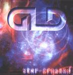

| Artist: | Grey Lady Down |
| Title: | Star-Crossed |
| Label: | self produced |
| Length(s): | 66 minutes |
| Year(s) of release: | 2001 |
| Month of review: | [11/2001] |
| 1) | Fading Faith | 9.11 |
| 2) | Shattered | 5.26 |
| 3) | As The Brakes Fail | 7.57 |
| 4) | Fallen | 13.55 |
| 5) | New Age Tyranny | 7.07 |
| 6) | Sands Of Time | 4.29 |
| 7) | Truth | 10.40 |
| 8) | Crossfire | 7.32 |
On Shattered the main influence continues to be IQ, especially in the beginning of the track. The vocals are of course much different, and the band rocks a bit more with Julian Hunt using a lot of rhythm guitar and the organ rocking away quite bit more. The vocal melodies are quite okay again and for the lovers of that instrument: yes some mellotron is included. The Hammond organ towards the end opens the way for an orgiastic ending in which we hear the Genesis influence again. The song ends with synth strings.
As The Brakes Fail opens acoustically. The sound is very open, spaceous. The music turns for the groovy after over a minute or two. Although the sound of Grey Lady Down continues to pervade the music, it does seem the band has outdated their sound. Not updated, because the band sounds less like the modern neo-progressive outfit that it used to. Although the compositions are not that different (maybe a bit less catchy), the band owes more to older bands such as IQ and Genesis, but also include more Hammond and mellotron. The music is energetic as ever, sometimes a bit too frolic for my tastes, but I do get the impression of a band going for it all the way.
Fallen is by far the longest track on this album. After a keyboard riddled opening, the song turns into a ballad of some kind. Although nothing much happens here, the emotional voice of Wilson supports the song. We are past halfway when the music gets to its first climax somewhat in Twelfth Night style. Time for some more atmosphere here with long notes on the guitar. Afterwards, the music picks up again. Plenty of energy here with Wilson singing and the guitar wailing, but melodically I feel I have heard it all before. The song concludes with hammered piano.
After the strong of New Age Tyranny with the now familiar emotive vocals of Wilson, the strong guitar work of Hunt and the piano of Westworth, we come to Sands Of Time. This is a rather short track with strumming acoustic. Actually, this is not a very strong one, with a rather obvious melody.
Truth opens in the style of IQ/Subterranea, but the easy going keyboards later on are very much like Fruitcake. There is a strong up and down motion with large amplitude with the bombast increasing and decreasing all the time. Halfway the guitar involves itself a bit more giving the song some more urgency. The final part of the album has the typical epic build-up of the band with Wilson crying out his vocals and the guitar crying along.
The final track is Crossfire with some terrific guitar work by Hunt.